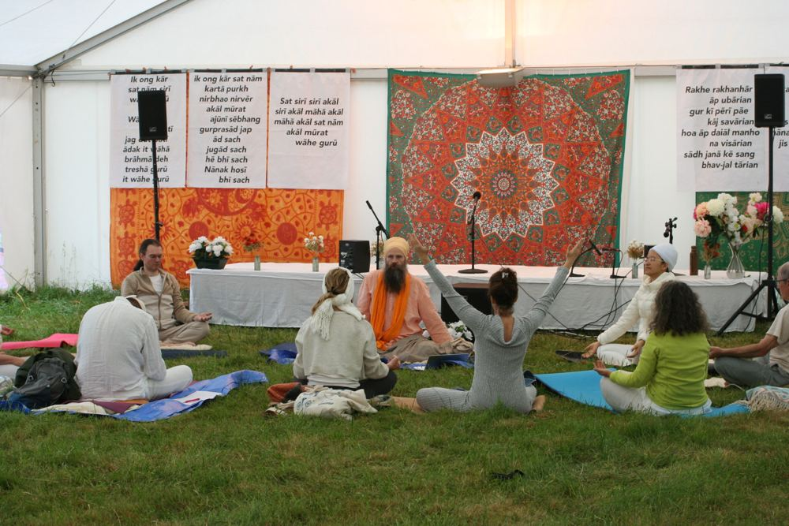
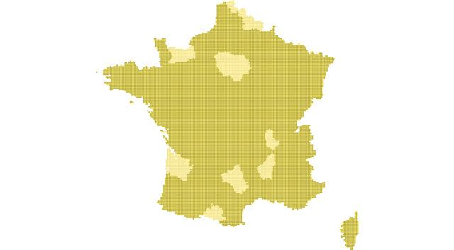

Se formerApprofondir sa pratique, devenir enseignant·e
Réparties en trois niveaux, les formations certifiées par le Kundalini Research Institute (KRI) permettent d’approfondir sa pratique et de partager le Kundalini Yoga autour de soi.
Les écoles affiliées à la Fédération répondent à un cahier des charges précis établi par KRI : la garantie de la qualité des enseignements. Un niveau 1 suivi dans une école certifiée par KRI et la FFKY ouvre l’accès au niveau 2 dans toute école certifiée, partout dans le monde.
Les formations s’organisent en modules résidentiels (semaines et week-ends) et/ou en ligne.
Devenir enseignant·e de Kundalini Yoga
Pour obtenir le diplôme international d’enseignant·e de Kundalini Yoga certifié par KRI : suivre le cycle de formation du niveau 1, sur un an, réussir l’examen final, et participer à au moins une journée de Tantra Blanc ou de méditation intensive, par exemple lors d’un festival de Kundalini Yoga.
Voir les prochaines formations

Développer votre excellence d’enseignant·e
Après l’acquisition des techniques de base, le niveau 2 approfondit votre pratique et votre connaissance du Kundalini Yoga, en soutenant votre croissance intérieure. Il se déroule en 5 modules thématiques de 6 jours :
- Communication consciente
- Cycles de vie et styles de vie
- Mental et méditation
- Relations authentiques
- Stress et vitalité

Le mental méditatif, le seva, la maturité spirituelle
Organisé par KRI avec un format propre, le niveau 3 accueille les élèves qui ont effectué les deux premiers niveaux. Il repose sur trois piliers : le mental méditatif, le seva et la maturité spirituelle.
Se former en France
En France, plusieurs écoles préparent à la certification internationale KRI d’enseignant·e de Kundalini Yoga. Pour vous inscrire, contactez-les directement par téléphone ou via leur site.
- École Gurprasaad · Cévennes
- Kundalini Yoga Paris
- Saadh Sangat · Paris
- Narayan · Lyon
- Studio Anahata · Gironde
- Ik Saran Dhian · Hautes-Pyrénées
- Ik Saran Dhian · Bretagne
- Ik Saran Dhian · Dordogne
Écoles partenaires francophones : Suisse romande, Belgique, Maroc, Québec. coordonnées et liens à mettre à jour

Breathwalk, Sat Nam Rasayan, Karam Kriya…
Des formations spécifiques prolongent le Kundalini Yoga : Sat Nam Rasayan, Karam Kriya, Yoga Doula, Gong, Shakti danse…
Découvrir les pratiques associéesLes prochaines formations
Le calendrier unique, filtré sur les formations.